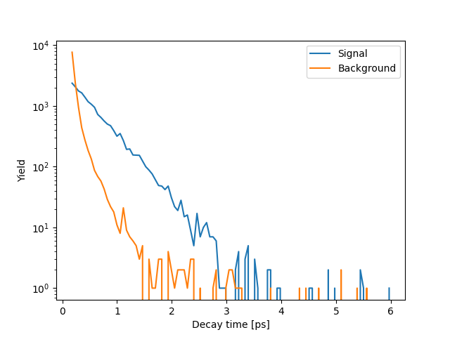

The file here contains data recorded by the LHCb experiment at CERN and shared via the CERN Open Data Portal. It contains information on 88,540 reconstructed decays of the D0 meson decaying to a kaon and a pion. The D0 meson contains the heavy charm quark and so decays in a very short, but non-zero, time. The assignment is to use this data to measure the lifetime of the D0 meson using python with only functionality from the Standard Library (so no numpy, pandas, etc - the full list of allowed modules is here).
The reconstructed candidates are a mixture of signal and background. There are four columns in the dataset:
mass: the reconstructed mass of the D0 in MeV. This follows a Gaussian distribution for signal and a flat distribution for background.decaytime: the reconstructed proper decay time of the D0 in picoseconds [ps]. This follows an exponential distribution for signal and a complicated distribution for background. The mean decay time for signal gives the lifetime.pt: the transverse momentum of the D0 in MeV. This is expected generally to be larger for signal than for background.ipchi2: the impact parameter chi-squared of the D0, which is unitless. This is a measure of how compatible the D0 is with having originated in the pp collision provided by the LHC. It’s thus expected to be smaller for signal than for background (which can originate from other processes).The goal is to remove as much background as possible while retaining as much signal as possible, then subtract the remaining background and calculate the mean decay time of the signal, which gives the lifetime.
In order to achieve this, write a script/module/package in python, using only Standard Library functionality, to do the following:
csv module can help with this). Find the minimum, maximum, mean and standard deviation of the values in the mass column and output these to the terminal.
matplotlib and make a histogram of the masses with, egfrom matplotlib import pyplot as plt
histo = plt.hist(masses, bins = 100)
plt.xlabel('D0 mass [MeV]')
plt.ylabel('N. candidates')
plt.show()masses is the sequence of mass values from the data file. You’ll get something like this:
so you can see that the Gaussian bump in the middle is the signal, and the background is fairly flat across the whole range.
decaytime values.
matplotlib and use a log scale that its distribution clearly isn’t a simple exponential (which would be a straight line on a log scale):
The regions near the edges of the mass distribution are entirely background. Since the background is flat in mass we can use these regions to estimate the number of background under the signal peak, and thus the number of signal.
min <= mass and mass < min + stddev
and
max - stddev <= mass and mass < max,
where min and max are the minimum and maximum of the masses and stddev their standar deviation. Count the number of candidates in the dataset that fall in either of these regions to give the number of background and output this.
mean - stddev <= mass and mass < mean + stddev,
where mean is the mean of the masses. Count the number of candidates in this region to get the number of signal plus background. Subtract from this the number of background to get the number of signal and output this.
Next we want to reduce the background as much as possible. As said previously, we expect the ipchi2 values to be smaller for signal than for background, so we can discard candidates with ipchi2 above a certain value.
ipchi2 < 13 and one with ipchi2 >= 13.ipchi2 >= 13 is almost entirely background, so we can discard it.Similarly, we expect pt values generally to be higher for signal than for background, so we can discard candidates with pt less than a certain value.
ipchi2 < 13 and find the minimum value of pt.pt > (pt min.) + 10 and (using the method from problem 3) determine the number of signal and background.(nsignal)/(nsignal + 2*(nbackground))**.5,
where nsignal is the number of signal, and nbackground the number of background.
pt in steps of 10 (ie, pt > (pt min.) + 20, pt > (pt min.) + 30, etc) up to 100 steps (pt > (pt min.) + 1000). At each step, re-evaluate the number of signal and background, and the signal significance.pt that gives the maximum value of the signal significance. Output the requirement value and the signal sigificance.ipchi2 < 13 and pt > (optimal value). In order to see the effects of this, you could plot the mass distribution for the candidates we’ve kept and the candidates we’ve discarded, which looks like this:
Having cleaned up our data, we can now determine the lifetime.
ipchi2 < 13 and pt > (optimal value).delta = (max - min)/100.min + i*delta <= decaytime and decaytime < min + (i+1)*delta
for i between 0 and 99.
min + (i+0.5)*delta. This gives us the decay-time distribution only for signal (having subtracted the background).mean = sum(nsignal[i] * decaytime[i])/sum(nsignal[i])
and the mean decay time squared as
meansq = sum(nsignal[i] * decaytime[i]**2)/sum(nsignal[i]),
where nsignal[i] is the number of signal in decay-time interval i and decaytime[i] is the middle of the decay-time interval for interval i.
mean - min, as in problem 2. Also calculate the standard deviation as (meansq - mean**2)**.5 and check that this agrees with the measured lifetime (within 0.005 ps).matplotlib, you could plot the signal decay-time distribution with, eg:plt.clf()
hsig = plt.plot(timevals, nsigvals)
plt.xlabel('D0 decay time [ps]')
plt.ylabel('Yield')
plt.yscale('log')
plt.show()where timevals is the sequence of middle decay-time values, and nsigvals is the sequence of number of signal in each interval.

so you can see that the signal distribution is a nice exponential (straight line on log scale), and that the remaining background tends to have lower decay times.
That’s it! Hopefully all the steps are clear. Please email me if not.
If you want an extra challenge (but no extra credit), you could try to evaluate an uncertainty on the lifetime we’ve obtained (in which case I’d recommend installing and using the uncertainties package), or you could check out Project Euler.